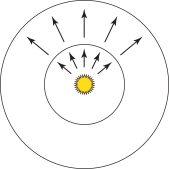
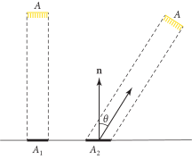
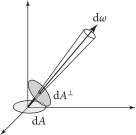
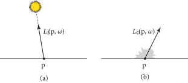

4.1 辐射度量学（Radiometry）
辐射度量学提供了一套描述光的传播和反射的思想和数学工具。它构成了本书其余部分所使用的渲染算法的推导的基础。有趣的是，辐射度量学最初并不是根据光物理学的第一原理推导出来的，而是基于粒子在空间中流动的光的抽象构建的。因此，像光的偏振（polarization）这样的效应并不能自然地融入这个框架，尽管后来辐射度量学与麦克斯韦方程组之间建立了联系，为辐射度量学奠定了坚实的物理学基础。
辐射传输（Radiative transfer） 是辐射能量传输的现象学研究（phenomenological study）。它基于辐射度量的原理，并在 几何光学（geometric optics） 层面上运作，在这个层面上，光的宏观特性足以描述光如何与比光的波长大得多的物体相互作用。将光的波动光学模型中的现象纳入考虑并不罕见，但这些结果需要用辐射传输的基本抽象语言来表达。
通过这种方式，可以描述光和尺寸与光波长大致相同的物体之间的相互作用，从而为色散（dispersion）和干涉（interference）等效应建模。在更细的细节层面上，需要量子力学来描述光与原子的相互作用。幸运的是，直接模拟量子力学原理并不是解决计算机图形学中的渲染问题所必需的，因此避免了这种方法的难处理性。
在 pbrt 中，我们将假设几何光学是描述光和光散射的适当模型。这导致了一些关于光行为的基本假设，这些假设将在整个系统中隐含使用：
- 线性（Linearity）： 光学系统中两个输入的综合效应（combined effect）始终等于每个独立输入效应的总和。非线性散射行为仅在涉及极高能量的物理实验中观察到，因此这通常是一个合理的假设。
- 能量守恒（Energy conservation）： 当光从表面或参与介质中散射时，散射事件产生的能量永远不会超过其初始能量。
- 无偏振（No polarization）： 包括可见光在内的电磁辐射都是 偏振的（polarized）。偏振的一个容易理解的类比是沿着绷紧的弦传播的振动。拨动弦的一端会产生垂直的波，并传播至另一端。然而，除了简单的线性运动，绷紧的弦还可以传导其他类型的振荡：运动可以是顺时针或逆时针，并呈圆形或椭圆形。所有这些可能性在光的情况下也同样存在。有趣的是，这种光的额外偏振状态在没有额外辅助工具（如专业相机或偏振太阳镜）的情况下，基本上对人类是不可感知的。因此，在 pbrt 中，我们将做出一个常见的假设，即光是不偏振的（unpolarized）——即对于许多不同偏振的波的叠加，我们只能感知到它们的平均行为。因此，与光唯一相关的属性是它的波长（或等同于，频率）的分布。
- 无荧光或磷光（No fluorescence or phosphorescence）： 光在一种波长下的行为与其他波长或时间的光的行为完全独立。与偏振一样，如果需要，包含这些效应并不太困难。
- 稳态（Steady state）： 环境中的光被假设为已达到平衡（equilibrium），因此其辐射分布随时间不发生变化。在现实场景中，光几乎瞬间达到这一状态，因此在实际应用中并不是一个限制。请注意，磷光也违反了稳态假设。
采用几何光学模型最显著的损失是与衍射（diffraction）和干涉（interference）效应的不兼容性。尽管这种不兼容性可以通过某些方法来规避——例如，通过用 维格纳分布函数（Wigner distribution function） 的概念替代辐射亮度（radiance）（Oh 2010，Cuypers 等，2012）——但这些扩展超出了本书的范围。
4.1.1 基本量（Basic Quantities）
渲染中有四个与辐射度量相关的量：通量（flux）、辐射照度（辐照度）/辐射出射度（irradiance / radiant exitance）、强度（intensity）和辐射亮度（辐亮度）（radiance）。它们可以用能量逐次对时间、面积和方向求极限来推导得出。所有这些辐射度量的量通常依赖于波长，尽管我们将在第 4.1.3 节才讨论这一主题。
能量（Energy）
我们的起点是能量，单位为焦耳（J）（joules）。光源发射光子（photons），每个光子具有特定的波长并携带特定的能量。所有基本的辐射度量量实际上是测量光子的不同方式。波长为 \( \lambda \) 的光子携带能量
\[
Q = \frac{hc}{\lambda}
\]
其中 \( c \) 是光速，\( \text{299,472,458m/s} \) ，而 \( h \) 是普朗克常数（Planck’s constant）， \( h \approx 6.626\times10^{-34}\text{m}^2\text{kg/s} \)。
通量（Flux）
能量测量是在一段时间内进行的，但是在渲染中通常使用稳态假设，我们主要关注的是测量瞬时（instant）的光。 辐射通量（Radiant flux），也称为 功率（power），是单位时间内通过某个表面或空间区域的总能量。辐射通量可以通过求每微分时间的微分能量的极限来计算：
\[
\Phi = \lim_{\Delta t \rightarrow 0}\frac{\Delta Q}{\Delta t} = \frac{\text{d}Q}{\text{d}t}
\]
其单位是焦耳/秒（J/s），或更常见的瓦特（W）（watts）。
例如，给定一个光，光在一个小时内发出 \( Q = 200,000\text{J} \)，如果在这一小时内始终发出相同的能量，我们可以得出光源的通量为
\[ \Phi = \text{200,000J/3600s} \approx 55.6\text{W} \]
相反，给定通量作为时间的函数，我们可以在一段时间范围内进行积分，来计算总能量：
\[
Q = \int_{t_0}^{t_1} \Phi(t)\text{d}t
\]
请注意，我们的符号在这里略显非正式：除其他问题外，由于光子是离散的量子，因此对微分时间求趋近于零的极限是没有意义的。对于渲染而言，光子的数量相对于我们感兴趣的测量是巨大的，这一细节并不成问题。
光源的总发射量通常用通量来描述。图 4.1 显示了从点光源测得的通量，即通过围绕光源的假象球体的总能量。请注意，图 4.1 中两个球体上测得的总通量是相同的——尽管通过大球体的任意局部部分的能量少于小球体，但大球体的面积更大，这意味着总通量是相同的。
图 4.1： 辐射通量 \( \Phi \) 测量通过表面或空间区域的能量。在这里，从点光源发出的通量在环绕光源的球体上进行测量。
辐射照度和辐射出射度（Irradiance and Radiant Exitance）
任何通量的测量都需要一个单位时间测量光子的面积。给定一个有限的面积 \( A \) ，我们可以定义该区域的平均功率密度为 \( E = \Phi / A \)。这个量要么是 辐射照度（irradiance）（E），即到达表面的通量的面积密度（受照面单位面积上的辐射通量），要么是 辐射出射度（radiant exitance）（M），即离开表面的通量的面积密度。这些测量的单位是 \( \text{W/m}^2 \)。（ 辐照度 这个术语有时也用于指离开表面的通量，但为了清晰起见，我们将对这两种情况使用不同的术语。）
对于图 4.1 中的点光源示例，外球面上某点的辐照度小于内球面上某点的辐照度，因为外球面的表面积更大。特别是，如果点光源在所有方向上发出相同的光照量，那么对于半径为 \( r \) 的球体，
\[
E = \frac{\Phi}{4\pi r^2}
\]
这一事实解释了为什么从光源在某一点接收到的能量随着与光源距离的平方而减少。
更一般地，我们可以通过在点 \( \text{p} \) 处求每微分面积的微分功率的极限来定义辐照度和辐射出射度：
\[
E(\text{p}) = \lim_{\Delta A\rightarrow 0}\frac{\Delta \Phi(\text{p})}{\Delta A} = \frac{\text{d}\Phi(\text{p})}{\text{d}A}
\]
我们还可以在一个面积内积分辐照度来求出功率：
\[
\Phi = \int_{A} E(\text{p})\text{d}A
\]
辐照度方程还可以帮助我们理解 朗伯定律（Lambert’s law） 的起源，该定律指出，到达表面的光能量与光线方向和表面法线之间的夹角的余弦成正比（图 4.2）。考虑一个面积为 \( A \) 、通量为 \( \Phi \) 的光源正在照射一个表面。如果光线直接垂直照射到表面（如图左侧所示），那么接收光线的表面面积 \( A_1 \) 等于 \( A \) 。在 \( A_1 \) 内部的任何点的辐照度为
\[ E_1 = \frac{\Phi}{A} \]
然而，如果光线与表面成一定角度，则接收光的表面的面积更大。如果 \( A \) 很小，则接收通量的面积 \( A_2 \) 大约是 \( A/\cos\theta \)。对于在 \( A_2 \) 内部的点，辐照度此时为
\[
E_2 = \frac{\Phi\cos\theta}{A}
\]
图 4.2：朗伯定律。 到达表面的辐照度随着光照的入射角的余弦变化，因为在较大的入射角下，照明覆盖的面积更大。
强度（Intensity）
现在考虑一个发出光子的无穷小光源。如果我们将这个光源置于单位球体的中心，我们可以计算发射功率的角密度（angular density）。 强度（Intensity），用 \( I \) 表示，就是这个量；它的单位是 \( \text{W/sr} \)。在整个球体的方向上，我们有
\[ I = \frac{\Phi}{4\pi} \]
但更一般地说，我们感兴趣的是求方向的微分圆锥的极限：
\[
I = \lim_{\Delta\omega\rightarrow 0}\frac{\Delta\Phi}{\Delta\omega} = \frac{\text{d}\Phi}{\text{d}\omega}
\]
如往常一样，我们可以通过积分强度来还原功率：给定强度作为方向的函数 \( I(\omega) \) ，我们可以在有限的方向集 \( \Omega \) 上进行积分以还原功率：
\[
\Phi = \int_{\Omega} I(\omega)\text{d}\omega
\]
强度描述了光的方向分布，但它仅对点光源有意义。
辐射亮度（Radiance）
最后也是最重要的辐射度量的量是 辐射亮度（radiance） \( L \)。辐照度和辐射出射度为我们提供了在点 \( \text{p} \) 处的微分功率与微分面积的比值，但它们并未区分功率的方向分布。辐亮度完成了最后一步，并相对于立体角测量辐照度或辐射出射度。它的定义为
\[ L(\text{p},\omega) = \lim_{\Delta\omega\rightarrow 0}\frac{\Delta E_{\omega}(\text{p})}{\Delta\omega} = \frac{\text{d}E_{\omega}(\text{p})}{\text{d}\omega} \]
我们使用 \( E_\omega \) 来表示垂直于方向 \( \omega \) 的表面辐照度。换句话说，辐亮度并不是相对于 \( \text{p} \) 所处的表面上入射的辐照度来测量的。实际上，这种测量区域的改变有助于在辐亮度的定义中消除朗伯定律中的 \( \cos\theta \) 因子。
辐亮度是单位面积、单位立体角的通量密度。就通量而言，它的定义为
\[
L = \frac{\text{d}^2\Phi}{\text{d}\omega\text{d}A^{\perp}}
\]
其中 \( \text{d}A^{\perp} \) 是 \( \text{d}A \) 在垂直于 \( \omega \) 的假设表面上的投影面积（图 4.3）。因此，当感兴趣的入射方向的圆锥 \( \text{d}\omega \) 变得非常小，且表面 \( \text{d}A \) 上感兴趣的局部面积也变得非常小时，它是对表面入射光的测量的极限。
图 4.3： 辐亮度 \( L \) 被定义为单位立体角 \( \text{d}\omega \) 单位投影面积 \( \text{d}A^{\perp} \) 上的通量。
在所有这些辐射度量的量中，辐亮度将是本书其余部分中使用最频繁的量。一个直观的原因是，从某种意义上说，它是所有辐射度量的量中最基础的；如果给定辐亮度，那么其他所有值都可以通过对辐亮度在面积和方向上进行积分来计算。辐亮度的另一个优良特性是，它在真空中的光线传播过程中保持不变。因此，它是进行光线追踪计算的自然量。
4.1.2 入射和出射辐射亮度函数（Incident and Exitant Radiance Functions）
当光与场景中的表面交互时，辐射亮度函数 \( L \) 通常在表面边界处是不连续的。在完全不透明表面的最极端情况下（例如，镜子），表面稍上方和稍下方的辐射函数可能完全无关。
因此，在不连续处求单侧极限是有意义的，以区分表面上方和下方的辐射亮度函数。
\[ \begin{align} L^{+}(\text{p},\omega) &= \lim_{t\rightarrow 0^{+}}L(\text{p}+t\mathbf{n}_{\text{p}},\omega) \\ L^{-}(\text{p},\omega) &= \lim_{t\rightarrow 0^{-}}L(\text{p}+t\mathbf{n}_{\text{p}},\omega) \\ \end{align} \]
其中 \( \mathbf{n}_\text{p} \) 是在 \( \text{p} \) 处的表面法线。然而，在整个文本中跟踪单侧极限是不必要且累赘的。
我们倾向于通过区分到达该点的辐射亮度（例如，由光源照明引起的）和离开该点的辐射亮度（例如，由表面反射引起的）来解决这种模糊性。
考虑一个位于物体表面的点 \( \text{p} \) 。到达该点的辐射亮度分布可以用一个位置和方向的函数在数学上描述。这个函数用 \( L_\text{i}(\text{p},\omega) \) 表示（图 4.4）。描述该点表面上反射辐射亮度的函数用 \( L_\text{o}(\text{p},\omega) \) 表示。请注意，在这两种情况下，方向向量 \( \omega \) 的指向远离 \( \text{p} \) 的方向，但要注意一些作者使用的符号，其中 \( omega \) 在 \( L_\text{i} \) 项中是反向的，以便指向 \( \text{p} \) 。
图 4.4：（a）入射辐射亮度函数 \( L_{\text{i}}(\text{p},\omega) \) 将到达某一点的辐射亮度分布描述为位置和方向的函数。（b）出射辐射亮度函数 \( L_{\text{o}}(\text{p},\omega) \) 给出了离开该点的辐射亮度分布。注意，对于这两个函数， \( \omega \) 指向远离表面的方向，因此，例如，\( L_{\text{i}}(\text{p},-\omega) \) 给出了到达表面另一侧的辐射亮度，而不是 \( \omega \) 所在的一侧。
下面是这些更直观的入射和出射辐射亮度函数与方程（4.4）中的单侧极限之间的简单关系：
\[ \begin{align} L_{\text{i}}(\text{p},\omega) &= \begin{cases} L^{+}(\text{p},-\omega), &\omega\cdot\mathbf{n}_{\text{p}} > 0 \\ L^{-}(\text{p},-\omega), &\omega\cdot\mathbf{n}_{\text{p}} < 0 \end{cases} \\ L_{\text{o}}(\text{p},\omega) &= \begin{cases} L^{+}(\text{p},\omega), &\ \ \omega\cdot\mathbf{n}_{\text{p}} > 0 \\ L^{-}(\text{p},\omega), &\ \ \omega\cdot\mathbf{n}_{\text{p}} < 0 \end{cases} \end{align} \]
在整本书中，我们将使用入射和出射辐射亮度函数的概念来解决边界处辐射亮度函数的模糊性。
另一个需要记住的特性是，在没有表面的空间（例如，自由空间）的点上，\( L \) 是连续的，因此 \( L^{+}=L^{-} \)，这意味着
\[
L_{\text{o}}(\text{p},\omega) = L_{\text{i}}(\text{p},-\omega) = L(\text{p},\omega)
\]
换句话说，\( L_{\text{i}} \) 和 \( L_{\text{o}} \) 仅在方向上有所不同。
4.1.3 辐射度量光谱分布（Radiometric Spectral Distributions）
迄今为止，所有的辐射度量量都在没有考虑其在波长分布变化的情况下被定义。因此，它们实际上是对感兴趣的（未指定的）波长范围内的波长依赖量的积分。正如我们能够通过其他量的极限来定义各种辐射度量量一样，我们也可以通过在小波长范围内求其极限来定义它们的光谱变体。
例如，我们可以将 光谱辐射亮度（spectral radiance） \( L_{\lambda} \) 定义为在一个无穷小波长的区间 \( \Delta\lambda \) 上的辐射亮度的极限，
\[
L_{\lambda} = \lim_{\Delta\lambda\rightarrow 0}\frac{\Delta L}{\Delta\lambda} = \frac{\text{d}L}{\text{d}\lambda}
\]
反之，辐射亮度可以通过在一系列波长范围内对光谱辐射亮度进行积分来找到：
\[
L = \int_{\lambda_0}^{\lambda_1} L_{\lambda}(\lambda)\text{d}\lambda
\]
其他辐射度量量的定义类似。这些光谱变体的单位中都有一个额外的 \( 1/\text{m} \) 因子。
4.1.4 亮度与光度学（Luminance and Photometry）
所有的辐射测量如通量、辐亮度等，都有相应的光度测量。 光度学（Photometry） 是研究可见电磁辐射在人类视觉系统中的感知。每个光谱辐射量都可以通过与光谱响应曲线 \( V(\lambda) \) 进行积分，转换为其相应的光度量，该曲线描述了人眼对不同波长的相对敏感性。
亮度（Luminance） 测量光谱功率分布对人类观察者的亮度感知。例如，亮度考虑到这样一个事实：对于人类而言，在绿色波长中具有特定能量的光谱分布，会比在蓝色波长中具有相同能量的光谱分布看起来更明亮。
我们将用 \( Y \) 表示亮度；它与光谱辐射亮度的关系是
\[
Y = \int_{\lambda}L_{\lambda}(\lambda)V(\lambda)\text{d}\lambda
\]
亮度和光谱响应曲线 \( V(\lambda) \) 与颜色的 XYZ 表示密切相关，将在 4.6.1 节中介绍。
亮度的单位是每平方米坎德拉（ \( \text{cd/m}^2 \) ），其中坎德拉（candelas）是辐射强度的光度等效值。表 4.1 中给出了几个代表性的亮度值。†（各种光度量有着相当不寻常的名称；Jim Kajiya 很好地总结了这种有些令人困惑的情况：“因此，一个尼特（nit）就是每球面度（steradian）一个勒克斯（lux），等于每平方米一个坎德拉（candela），也就是每平方米每球面度一个流明（lumen）。明白了吗？”）
条件 亮度（\( \text{cd/m}^2 \)，或尼特（nits）） 地平线上的太阳 600,000 60 瓦特灯泡 120,000 晴朗的天空 8,000 典型的办公室 100–1,000 典型的计算机显示器 1–100 路灯照明 1–10 阴云密布的月光 0.25
本章中介绍的所有其他辐射度量量都有光度学等同物；它们在表 4.2 中总结。
辐射度量 单位 光度测量 单位 辐射能量 焦耳（\( \text{J} \)） 光能 Talbot（\( \text{T} \)） 辐射通量 瓦特（\( \text{W} \)） 光通量 流明（\( \text{lm} \)） 辐射强度 \( \text{W/sr} \) 发光强度 \( \text{lm/sr}=\) 坎德拉（\( \text{cd} \)） 辐射照度 \( \text{W}/\text{m}^2 \) 光照度 \( \text{lm/m}^2 \) 勒克斯（\( \text{lx} \)） 辐射亮度 \( \text{W}/(\text{m}^2\text{sr}) \) 亮度 \( \text{lm}/(\text{m}^2\text{sr}) = \text{cd/m}^2 = \) 尼特